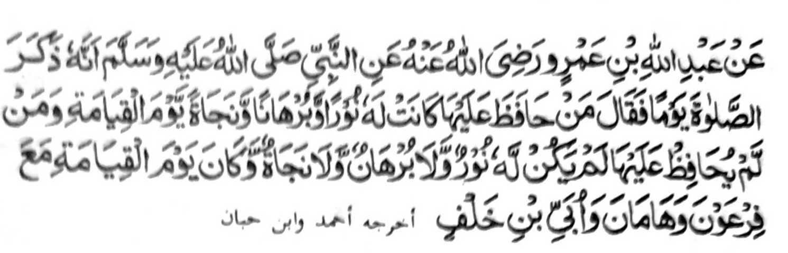

Miyaka thitayan ko Abdullah bin Omar a miyka isa a gawi-i na pitharo o Nabi (Sallallaho 'Alaihi Wasallam) ko masa a phagaloy niyan so Sambayang, "Sa tao a siyapen niyan sekaniyan (a Sambayang) na mapembagi-an niyan so sindao go daowa niyan go khiselang iyan sa maliwanag sa Alongan a Maori. Sa peman sa tao a di niyan siyapen na da-a mapembagi-an niyan a sindao go da-a khidaowa niyan ago di phaka-selang sa maliwanag go khabaloy sekaniyan a ped o Piraon go so Haman go so Ubay bin Khalaf."
Omani isa na katawan niyan a so Piraon - a mala a Kapir - na tanto a miyanakabor sa pitharo iyan a sekaniyan na 'Tohan a Maporo' - go biyaloy niyan so manga tao niyan a pekhasimba iran. So Hamman na aya niyan Paladan a Mantri ago wazir. So Ubbay bin Khalaf na aya tanto a mananamar ago masopi-it a ped ko manga Kapir sa Makkah a rido-ai o Islam. Si-i ko dapen kapaka-togalin sa Madinah, na lalayon so gi-i niyan katharo-a ko Nabi (Sallallaho 'Alaihi Wasallam) sa katharo a tanto a masakit, "Pephagoyag ako sa koda a mapiya a kapephaka-kana ko ron. Aden a gawi-i a mbono-on naken seka a khokoda ako ko likod iyan." Miyaka isa na inisembagon o Nabi (Sallallaho 'Alaihi Wasallam), "Insha Allah! na aya kaphata-ingka na penggolalan ko dowa lima ko." Si-i ko kiyathidawa sa Uhud, na piyakazobada iyan angkoto a maidan a gi-i niyan nggiloba-an so Nabi (Sallallaho 'Alaihi Wasallam) sa gi-l niyan tharo-on, "O di mabono so Muhammad (Sallallaho 'Alaihi Wasallam) imanto, na daden a okit a bako pen maka-paginetao." Miyato-on niyan bo so Nabi (Sallallaho 'Alaihi Wasallam) sarta a piyalalagoy niyan. So manga Sahabah na miyata-ayon siran sa pagimasaden niran sekaniyan sa di niyan pen kira-ot ko Nabi (Sallallaho 'Alaihi Wasallam), ogaid na so Nabi (Sallallaho ’Alaihi Wasallam) na siyaparan niyan siran. So kiyapaka rani niyan na kominowa so Nabi (Sallallaho Alaihi Wasallam) ko isa ko manga Sahabah niyan sa bangkao na inibangkao niyan non, a kiyasabapan sa kiyagaras o lig iyan. Tiyabad sekaniyan sa miya-olog si-i ko koda iyan na taros a miyalagoy magapas ko kota iran a pekhorisek. "Ibet ko wlah, ka miyabono ako o Muhammad (Sallallaho 'Alaihi Wasallam)!" So manga tao na pephamitowa-an niran sa pitharo iran non a matag garas sa da-a patot a ipekhalek a ginawa niyan, ogaid na aya gi-i niyan tharo-on na, "So Muhammad (Sallallaho 'Alaihi Wasallam) na miyapaka-langkap iyan sa Makkah, a khabono ako niyan. Ibet ko Allah, ka apiya doda iyan bo, na phatay ako den."
Miyapanothol a lagid o sapi a kapekhorisek iyan. So Abu Sufyan, a kapir pen sa masa oto na pephanikhaya-an niyan sekaniyan ko kapekhorisek niyan sangka-iya maito a pali, ogaid na aya inisembag iyan non na, 'Katawan ka o antawa-a i miyali' raken? Daden a saiakao a rowar ko Muhammad (Sallallaho 'Alaihi Wasallam). Ibet ko Lat ago so Uzza! (Manga barahala a pezimba-an o manga Quraish) ka opama ka giyangka-iya a magegedam aken a masakit na mambagi-bagi ko langon o tao sa Hijaz, na daden a makapaginetao kiran. Ipho-on ko masa a tiyangked iyan a khabono ako niyan na mata-an a miyatangked aken ko ginawa ko a so kaphatay aken na zisi-i sa barokan niyan Apiya bako niyan den diyoda-an ko oriyan angkoto a katharo iyan, na miyatay ako den." Miyatay sekaniyan ko kipembalingen non sa diyangka a salongan a ilalakao ron a da niyan pen kaoma-a sa Makkah.
Ilaya niyo! Sakatao a Kafir lagid o Ubbay bin Khalaf a tiyangked iyan so kabebenar o manga katharo o Rasulollah (Sallallaho 'Alaihi Wasallam) a daden a sangka-an a atay niyan sa kaphatay niyan; ogaid na anda tano imanto matatago? Minsan paparatiyaya-an tano a sekaniyan na piyamoro-poro-an a Nabi o Allah, go so manga katharo iyan na langon benar go ipephangandag tano so babaya tano ron, ogaid na anda taman i gi-i tano kinggolalanen ko manga pandoan niyan ago anda taman i kika-aleken tano ko manga siksa a gi-i niyan ipanapaos. Palaya tano si-i mamimikiran ago somembag.
So Ibn Hajar, ko kiya-aloya niyan sangka-iya Hadith, na miya-aloy niyan pen so Qaroon a ped o Piraon ago so manga ped. lnizorat iyan. "So kipagepeda-an sangka-iya manga tao ko Gawi-i a Kaphangokom na sabap sa aya kalilid a kipekhibagak o Sambayang na sabap ko manga ola-ola angka-iya a manga baradosa a manga tao. Opama ka aya kibagaken o tao ko Sambayang na sabap sa babaya sa tamok, na khaped o Qaroon, opama sabap sa kadato, na so Piraon i ped iyan; opama sabap sa onot sa datu, na so Haman i ped iyan; opama sabap sa kandagang, na so Ubbay bin Khalaf i ped iyan." So katago ko betad o siranoto, na aya den osayan ko masakit a siksa a bagi-an o manga tao a miyagak sa Sambayang. Apiya pen so manga Kafir na ziksa-an siran sa dayon sa dayon, go so miyaratiyaya na phakaliyo ko oriyan o kasiksa-an niyan sa phakasoled sa Sorga, ogaid na so kathay angka-iya masa na antawa-a i matao ron, masiken a phipirang gibo ragon a kathay niyan.